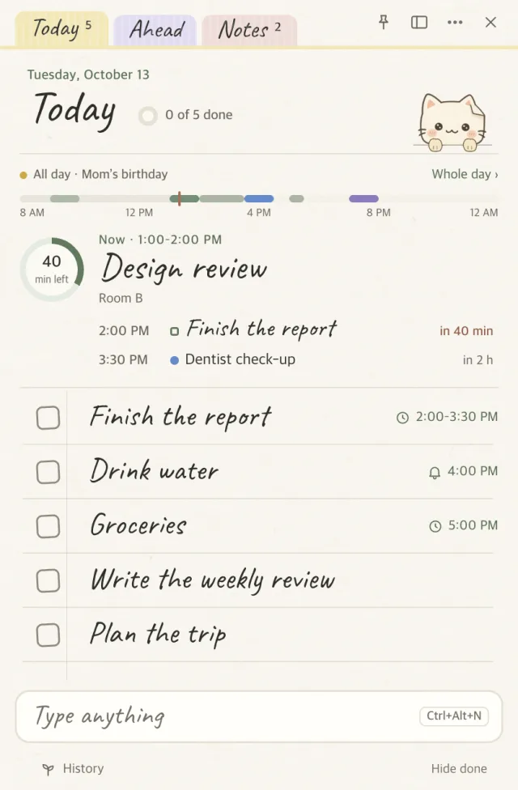
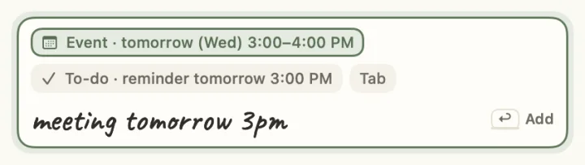

A day strip that puts now first
What's on now is in large handwriting, with the time left in a ring. Click it to unfold the day as a timetable, where you can drag to-dos in 15-minute steps.

A to-do app for macOS · Windows
A note for writing down to-dos and ticking them off. Above the list you see what's on now and how long is left; at the bottom of the screen, a paper cat brings your reminders. No account: everything is saved in files on your computer.
Free · macOS 14+ (Apple Silicon) · Windows 10/11 · Korean · English · Dutch. 종이냥 (jongi-nyang) means “paper cat”.


Type into the input line at the bottom and it works out whether you meant a to-do, an event or a timer, and shows its reading as a chip. If it's wrong, press Tab. After adding, “Switch” in the toast changes it to the other kind.
meeting tomorrow 3pmEvent · tomorrow 3:00 PMreport by FridayTo-do · due Fridaytimer 4040-minute timeralarm 7am weekdaysAlarm · weekdays 7:00 AM
The day strip, a focus card, alarms, the Ahead tab, an evening tidy-up, and the cat.
What's on now is in large handwriting, with the time left in a ring. Click it to unfold the day as a timetable, where you can drag to-dos in 15-minute steps.
Type “report 25 min focus” and the note turns into a single card with Done, 5 more min and Not now. Pomodoro rounds work too.

Set days, sound and snooze. When it rings, a slip appears with the cat shaking a bell. It ignores keys for 1.5 seconds, so typing in another app can't dismiss it.

Each day of this week and next with its events and due to-dos. Drag a to-do onto another day and its due date follows.

At 8 pm it asks: “3 left today. Move them to tomorrow?” If you miss it, it asks the next morning. Search covers today, Ahead, memos, history and events, and understands Korean initial consonants.

It breathes and wanders above the Dock, walks in with your reminders and celebrates finished to-dos. Sometimes it asks a question with answer buttons, like “A 5-minute break?”, which starts a 5-minute timer.

Pick an iCloud Drive, OneDrive or Dropbox folder as the storage location and both computers share one list. Edits made at nearly the same time both survive, and a memo edited on two devices is merged line by line and character by character. There is no account and no server.
Calendar, history, settings and help are in one Desk window. When the system is in dark mode, every window switches to night paper, the color of paper in a room with the lights off.

I spent more time on how to show today above the list than on anything else. Rounds 1 and 2 showed the whole day. Using it, I found that what I needed was what's on now and how long is left.
The day as one bar; now and next as one sentence.

Six-hour ticks; timed to-dos below the bar.

No card; what's on now, large. Click to see the whole day.

Swift (SwiftUI + AppKit) on the Mac, Electron + TypeScript on Windows, built separately. They share no code. Both have to pass the same tables of test cases, which keeps their behavior the same.
Free. The builds aren't code-signed, so allow them once on first launch.
JongiNyang-1.25.1-x64.exe.